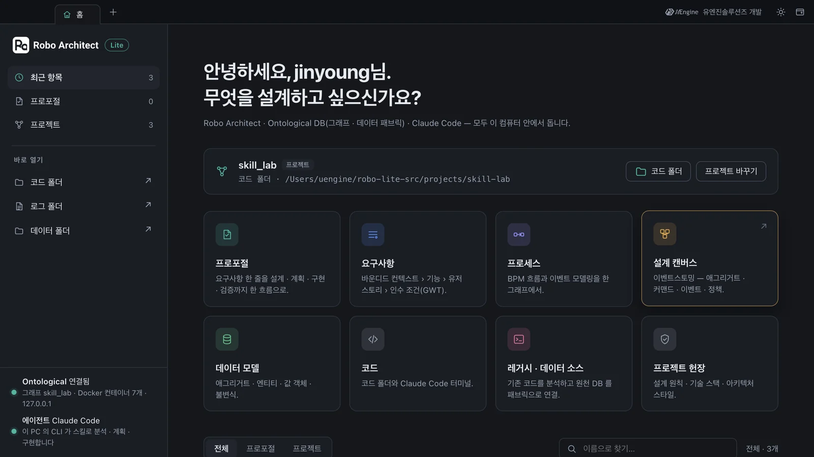
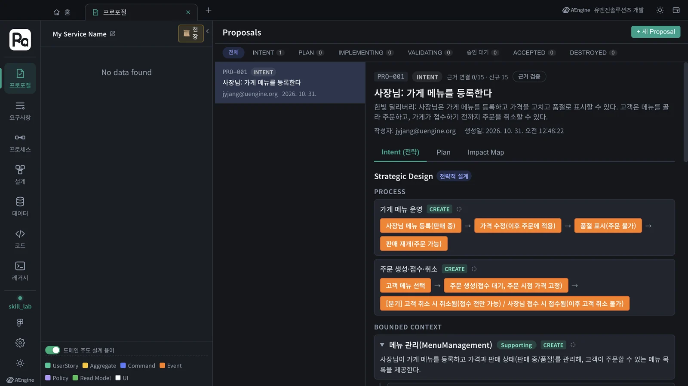
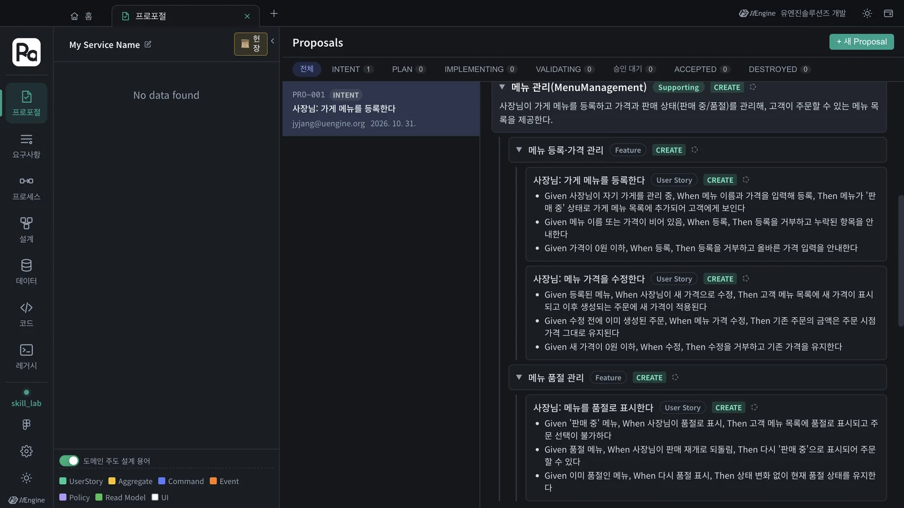

Robo Architect가 프로포절을 분석하고 계획하고 구현할 때 따르는 지시는 모두 스킬 파일(SKILL.md)에 글로 적혀 있습니다. 스킬 파일에 규칙 한 줄을 더하면 엔진의 결과가 바뀝니다. 연습용 프로젝트에서 직접 고쳐 보고 결과를 비교합니다.
스킬이 엔진이다#
3~5장에서 「Claude Code가 분석합니다」라고 한 곳마다, 앱은 내 컴퓨터의 claude 를 불러 스킬 파일 하나를 지시서로 건넸습니다. 스킬 파일은 Markdown 문서입니다 — 목적, 절차, 출력 형식, 규칙이 사람이 읽는 글로 적혀 있습니다. 코드를 고치지 않고 이 글을 고치면 엔진의 판단이 바뀝니다.
| 단계 | 스킬 | 이 튜토리얼 |
|---|---|---|
| INTENT — 전략 설계 | robo-proposal-intent |
3장 |
| 헌장 — 추천과 문서 작성 | robo-project-constitution |
4장 |
| PLAN — 전술 설계 · 아키텍처 | robo-proposal-plan |
5장 |
| 작업 목록 | robo-proposal-tasks |
6장 |
구현 — 코드 탭 셀의 /robo-implement PRO-001 |
robo-implement |
6장 |
| 검증 | robo-proposal-test · robo-sync |
7장 |
| 영향 분석 | robo-proposal-context |
9장 |
| 상세 DDD 단계 | robo-proposal-discover · -decompose · -strategize · -connect · -define · -scope · -tactical |
3장 「상세 DDD」 |
스킬은 묶음 폴더 세 개에 있습니다 — robo-proposals/(프로포절 단계), robo-spec/(구현 · 역동기화), robo-changes/(요구사항 변경).
앱이 정하는 것과 스킬이 정하는 것
단계의 순서, 결과의 저장, 화면은 앱이 정합니다. 예를 들어 헌장 인터뷰의 질문 순서는 앱이 정해 두었고(4장의 두 질문), 스킬은 그 질문의 추천과 근거, 그리고 답을 받아 쓰는 헌장 문서를 맡습니다. 「무엇을 어떻게 판단해 무엇을 써 내는가」가 스킬의 몫입니다.
스킬 파일은 어디에 있나#
| 위치 | 쓰임 |
|---|---|
앱 설치 폴더의 resources/runtime/architect/app/skills/ |
단계마다 앱이 claude 에 건네는 원본. Windows 기본 설치라면 %LOCALAPPDATA%\Programs\Robo-Architect\resources\runtime\architect\app\skills\ 입니다 |
홈 폴더의 ~/.claude/skills/ |
코드 탭의 Claude Code 셀에서 /robo-implement 같은 슬래시 명령으로 쓰는 사본. 코드 탭을 처음 열 때 빠진 스킬이 있으면 설치할지 묻습니다 |
따라 하기 1 — 연습용 프로젝트 만들기#
스킬은 앱 전체가 함께 씁니다. 한빛 딜리버리 설계를 건드리지 않도록 빈 프로젝트를 하나 따로 만들어 실험합니다.
- 홈 위쪽 프로젝트 줄에서 프로젝트 바꾸기를 누릅니다.
- 새 프로젝트 칸에
skill_lab을 쓰고 만들기, 코드 폴더는 빈 폴더(예:skill-lab)를 골라 프로젝트 열기를 누릅니다. - 프로젝트 줄에
skill_lab이 보이면 됩니다. 이 프로젝트는 그래프가 따로라서 무엇을 만들어도hanbit_delivery에 섞이지 않습니다.

따라 하기 2 — 스킬에 규칙 한 줄 더하기#
robo-proposals/robo-proposal-intent/SKILL.md 를 편집기로 엽니다. 맨 아래 ## Rules 에 규칙이 여덟 개 있습니다.
## Rules
1. 레거시 구현은 현실 근거로 사용하되 사용자 요구사항보다 우선하거나 그대로 복사하지 않는다.
…
7. 출력 언어는 원본 프롬프트의 언어를 따른다.
8. 피드백 재생성에서는 피드백을 최우선 반영하고 지적되지 않은 부분을 유지하며 추가 명확화를 만들지 않는다.
여기에 아홉 번째 규칙을 더하고 저장합니다. 팀이 코드에 영어 이름을 쓰니, 바운디드 컨텍스트마다 영어 이름을 함께 정해 달라는 규칙입니다.
9. 모든 BoundedContext 이름 뒤에 영문 이름을 괄호로 붙인다. 예: 주문(Ordering), 메뉴 관리(MenuManagement).
고치기 전에 사본을
원본을 따로 복사해 두세요. 실험이 끝나면 되돌려야 하고, 앱을 다시 설치하거나 업데이트하면 설치 폴더의 스킬은 새 판으로 덮입니다. 팀이 계속 쓸 규칙이라면 스킬 저장소에 반영해 함께 배포합니다.
따라 하기 3 — 같은 요구사항으로 다시 분석하기#
skill_lab에서 프로포절 탭을 열고 + 새 Proposal에 3장과 같은 문장을 넣습니다.한빛 딜리버리: 사장님은 가게 메뉴를 등록하고 가격을 고치고 품절로 표시할 수 있다. 고객은 메뉴를 골라 주문하고, 가게가 접수하기 전까지 주문을 취소할 수 있다.- AI 분석 시작을 누릅니다. 앱은 다시 시작할 필요가 없습니다 — 단계마다 스킬 파일을 그때 읽습니다. 이 튜토리얼에서는 105초 걸렸습니다.
- Proposal 보기로 전략 설계를 엽니다.

| 3장 (원래 스킬) | 이 장 (규칙 9 추가) | |
|---|---|---|
| 바운디드 컨텍스트 1 | 메뉴 관리 | 메뉴 관리(MenuManagement) |
| 바운디드 컨텍스트 2 | 주문 | 주문(Ordering) |
코드를 한 줄도 고치지 않았는데, 엔진이 새 규칙을 따라 이름을 정했습니다. 나머지(기능 · 사용자 스토리 · 인수 조건)는 규칙과 상관없으니 그대로 3장과 같은 흐름으로 나옵니다.

따라 하기 4 — 되돌리기#
SKILL.md를 복사해 둔 원본으로 되돌립니다.- 홈에서 프로젝트 바꾸기 →
hanbit_delivery를 고르고 코드 폴더hanbit-delivery로 다시 엽니다.
어떤 규칙을 스킬에 넣을까
「이름은 영어 병기」, 「인수 조건마다 실패 흐름 하나 이상」, 「금액은 원 단위 정수」처럼 팀이 매번 사람 손으로 고치던 것이 좋은 후보입니다. 한 번 스킬에 적어 두면 모든 프로포절이 처음부터 그렇게 나옵니다.
확인할 것#
skill_lab의 프로포절에서 바운디드 컨텍스트 이름에 영어가 붙어 나왔다.- 스킬 파일을 원본으로 되돌렸고, 프로젝트를
hanbit_delivery로 돌려 놓았다.
확인 문제#
- 스킬 파일을 고친 뒤 앱을 다시 시작해야 하나요?
- 왜 연습용 프로젝트를 따로 만들었나요?
- 헌장 인터뷰에서 질문을 하나 더 묻게 하고 싶습니다. 스킬만 고치면 될까요?
정답
- 아닙니다. 앱은 단계를 실행할 때마다 스킬 파일을 그때 읽습니다.
- 실험한 프로포절이 한빛 딜리버리 설계에 섞이지 않게 하려고입니다. 프로젝트마다 그래프가 따로입니다.
- 아닙니다. 인터뷰의 질문 순서는 앱이 정합니다. 스킬은 추천 · 근거와 헌장 문서를 맡습니다.